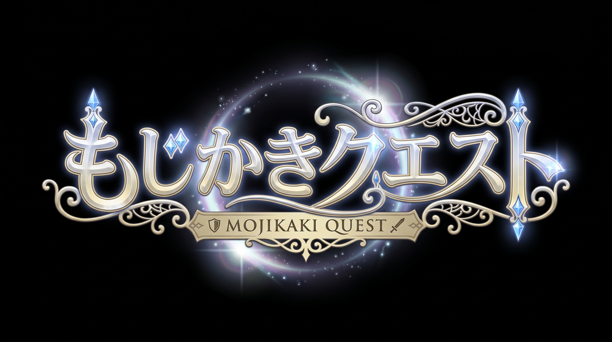
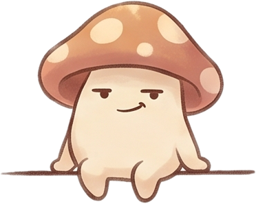
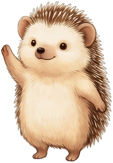

📱
スマホを よこに してね！
🌰
0
かいた もじは、ちからに なる。
せかいを すくう ぼうけんへ。
▶ タップして はじめよう

はじめから
つづきから
▶ タップしてえらぶ
もじを かいて、
てきを たおして、
せいれいを たすけよう。
▶ タップ
どの もじを かく？
ひらがな
カタカナ
しろの おくへ ▶
もりの いりぐち
→ すすめ！
すすむ ▶
もじかきクエスト
HP
30/30
MP
20/20
そうび

キノコのせんし
★
★
★
★
★
こわれた はし
もじを なぞって はしを なおそう！
タップ
おてほんちゅう
▶
おてほん
がんばれー！
がんばれー！

🍄
🌰
👾
つぎ →
できた！🎉